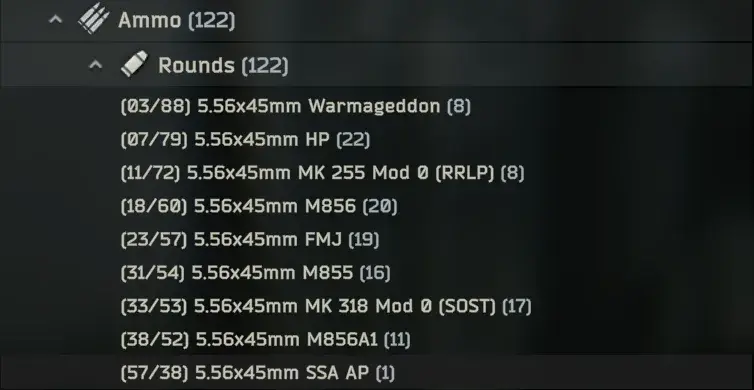
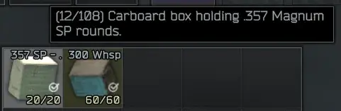

Mod
Ammo Stats
- Downloads
- 11,638
- Favourites
- 13
- Mod lists
- 41
This mod displayed a profile-binding notice on Forge.
Configuration file has explanations inside.
Adds the bullet’s penetration and damage output to it’s name. Makes it very easy to find good ammo as well as sort through bad ammo.
Also applies to ammo packs!


If you wish to support my work click the link below,
never feel obligated to donate in order to receive support.
Version
1.3.1
SPT ~4.0
Fika: compatible
4,565 downloads8.5 KB
Added support for other languages. Make sure your SPT language is set properly inside
SPT/SPT_Data/configs/locale.json
VirusTotal: report 1
Version
1.3.0
SPT ~4.0
Fika: compatible
442 downloads8.4 KB
Updated to 4.0.x
VirusTotal: report 1
Version
1.2.0
SPT ~3.11.0
Fika: unknown
1,737 downloadsUnknown size
Updated to 3.11.x
VirusTotal: report 1
Version
1.1.1
SPT ~3.10.0
Fika: unknown
1,644 downloadsUnknown size
Updated for 3.10.x!
VirusTotal: report 1